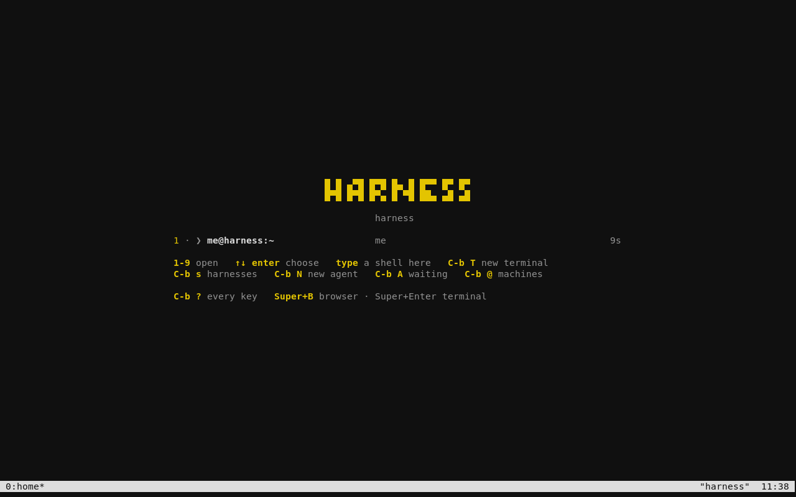
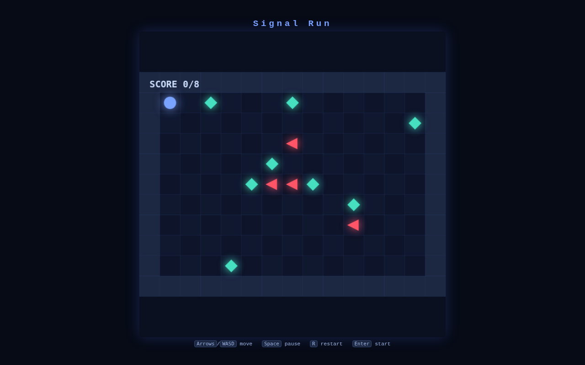

A Linux OS for the age of agents Preview 0.1
Boot into
your work.
Your agents. Your terminal.
A browser when you need it.
An operating system built around agents. Describe the work. Let them use the tools. Review what they make. Built for programmers first.


A smaller interface
The conversation
is the workspace.
Code, commands, diffs, tests. Most of the work already lives in the terminal. So does the interface.
- 01
Choose your agent.
Press Ctrl + B, then Shift + N. Start Claude Code, Codex, OpenCode, or pi. Each gets its own terminal pane.
- 02
Ask. Build. Review.
Let the agent install the tools your project needs. Read the changes, run the tests, and keep going. An ordinary shell is always one pane away.
- 03
See it when you need to.
Super + B opens Chromium or switches back to hn. Use it for a website, a game, or a harness viewer. It stays closed until you ask.
Built by subtraction
No panels.
No wallpaper.
No ceremony.
There is no app grid to arrange. No desktop to decorate. No collection of tools chosen for a project you haven’t started.
Underneath is ordinary Arch Linux: the LTS kernel, a package manager, your files, and your administrator account. Add a compiler, a database, containers, or local AI when the work calls for it.
Network, audio, clipboard, locking, and recovery are included. The computer still has to be a computer.
Under the surface Arch Linux labwc foot hn Chromium
Small. Measured.
Read the evidence- ISO download
- 1.50GiB
- Settled idle memory
- ~500MiB
- Offline VM installation
- 30–45sec
Preview 4 measurements in 2-vCPU, 4-GiB x86 VMs installed from virtual USB. Idle memory is with agents and browser closed. Installation excludes downloading the image and answering prompts. Physical hardware will differ.
What has actually been tested?
The keyboard installer, BIOS and UEFI USB boot, automatic RAM-image detection, offline installation, encrypted disks, wrong-password retry, clipboard, browser switching, update retry, and recovery that preserves projects. This exact image passed at 1 GiB and 4 GiB RAM, including a real first agent conversation typed through the keyboard.
In the 4-GiB checks, installed BIOS boot reached hn readiness in 17.3 seconds, including automated login. Encrypted boot showed the password prompt in 4.6 seconds and reached hn 8.3 seconds after password submission. Settled idle memory was 481–511 MiB. Separate 1-GiB checks measured 396–399 MiB. These are VM observations, not physical power-on benchmarks.
OpenCode agents built a Python CLI, a website, a keyboard game, and a Fastify/SQLite app. Three completed projects were retained; the game agent ran again. All 31 unit tests and independent browser/API checks passed on this image. Three fresh domain-specific harness exercises also passed with the shared HTML and game viewers.
A user confirmed preview 2 installation and boot into hn from a ThinkPad’s internal disk. That feedback shaped this release. Preview 4 still needs physical Wi-Fi, suspend, and NVIDIA testing. Agent authentication and local model support depend on the tools and hardware you choose.
Download the projects and harness examplesSee a game built inside the OS.

Signal Run. Built with HTML, CSS, and JavaScript by OpenCode in the installed OS. This is project output, separate from the system image.
0.1.0-preview.4
Give it a machine.
Make something.
An x86-64 Intel or AMD PC. Start with 2 GiB RAM and a spare disk of at least 12 GiB. Secure Boot off. A disposable x86 VM works too.
USB installation guide- Download the ISO and verify its checksum.
- Write the whole image to a USB stick and boot it.
- Press Enter on the welcome screen to install.
The installer erases the entire selected disk. It does not resize an existing OS. Back up that disk first. Encryption is on by default.
Choose your disk, set encryption, and enter your password twice. Choose Install to erase that disk and begin. There is no second confirmation. Your account is me@harness.
Installation works offline. To try first, press T on the welcome screen. Connect Wi-Fi when prompted and start bundled OpenCode with its default settings. Other agents download when selected. Accounts and model usage are yours.
Download the ISO